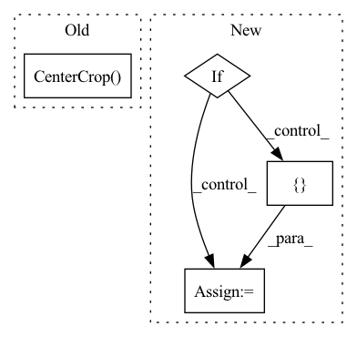

Pattern ID :12014

Before Change
self.transform= transforms.Compose([//transforms.ToPILImage(),
transforms.Resize(256),
transforms.CenterCrop(224),
transforms.ToTensor(),
transforms.Normalize([0, 0, 0], [1, 1, 1])
])
After Change
if data_root[-3:]=="csv":
self.r=pd.read_csv(data_root)
self.options = options
if "radiomics_path" in options["general"].keys():
self.radiomics_path = options["general"]["radiomics_path"]
os.makedirs(self.radiomics_path, exist_ok=True)
else:
self.radiomics_path = []
self.extractor = featureextractor.RadiomicsFeatureExtractor("radiomics/RadiomicsParams.yaml")
self.cls_num=cls_num
self.data = []
self.text_book=None
In pattern: SUPERPATTERN
Frequency: 3
Non-data size: 4
Instances
Fragment ID: 40662473
Project Name: chenwwweixiang/opencoviddetector
Commit Name: 84a1767a9eb9831c45931c7d04c1e6951d2eb322
Time: 2020-04-25
Author: chenwx_thu@foxmail.com
File Name: data/dataset.py
M Class Name: NCPJPGtestDataset_new
N Class Name: NCPJPGtestDataset_new
M Method Name: __init__(8)
N Method Name: __init__(7)
M Parent Class: Dataset
N Parent Class: Dataset
M File Name: data/dataset.py
N File Name: data/dataset.py
M Start Line: 826
M End Line: 827
N Start Line: 851
N End Line: 873
'>
Before Change
transforms.Normalize([0, 0, 0], [1, 1, 1])
])
self.test_augmentation = transforms.Compose([transforms.Resize(256),
transforms.CenterCrop(224),
transforms.ToTensor(),
transforms.Normalize([0, 0, 0], [1, 1, 1])
])
After Change
self.padding = padding
self.data = []
self.options=options
if "radiomics_path" in options["general"].keys():
self.radiomics_path = options["general"]["radiomics_path"]
os.makedirs(self.radiomics_path,exist_ok=True)
else:
self.radiomics_path=[]
if data_root[-3:]=="csv":
self.r=pd.read_csv(data_root)
self.data_root=data_root
self.padding = padding
'>
Fragment ID: 40662475
Project Name: chenwwweixiang/opencoviddetector
Commit Name: 84a1767a9eb9831c45931c7d04c1e6951d2eb322
Time: 2020-04-25
Author: chenwx_thu@foxmail.com
File Name: data/dataset.py
M Class Name: NCPJPGDataset_new
N Class Name: NCPJPGDataset_new
M Method Name: __init__(8)
N Method Name: __init__(7)
M Parent Class: Dataset
N Parent Class: Dataset
M File Name: data/dataset.py
N File Name: data/dataset.py
M Start Line: 700
M End Line: 711
N Start Line: 695
N End Line: 721
'>
Before Change
[
transforms.ToPILImage(),
transforms.Resize(size=int(1.1 * size)),
transforms.CenterCrop(size=size),
transforms.ToTensor(),
transforms.Normalize(mean, std),
]
After Change
transforms = [torchvision.transforms.ToPILImage(), ]
if config.resize:
transforms += [
torchvision.transforms.Resize(size=int(1.1 * config.resize)),
torchvision.transforms.CenterCrop(size=config.resize),
]
transforms += [
'>
Fragment ID: 40662471
Project Name: kaifishr/pytorchrelevancepropagation
Commit Name: 1cedb1dc13da1746b58e096fb04b7d37ea8bd97d
Time: 2022-10-20
Author: kaifabi@posteo.net
File Name: projects/real_time_lrp/data_processing.py
M Class Name: DataProcessing
N Class Name: DataProcessing
M Method Name: __init__(3)
N Method Name: __init__(3)
M Parent Class:
N Parent Class:
M File Name: projects/real_time_lrp/data_processing.py
N File Name: projects/real_time_lrp/data_processing.py
M Start Line: 14
M End Line: 27
N Start Line: 14
N End Line: 31